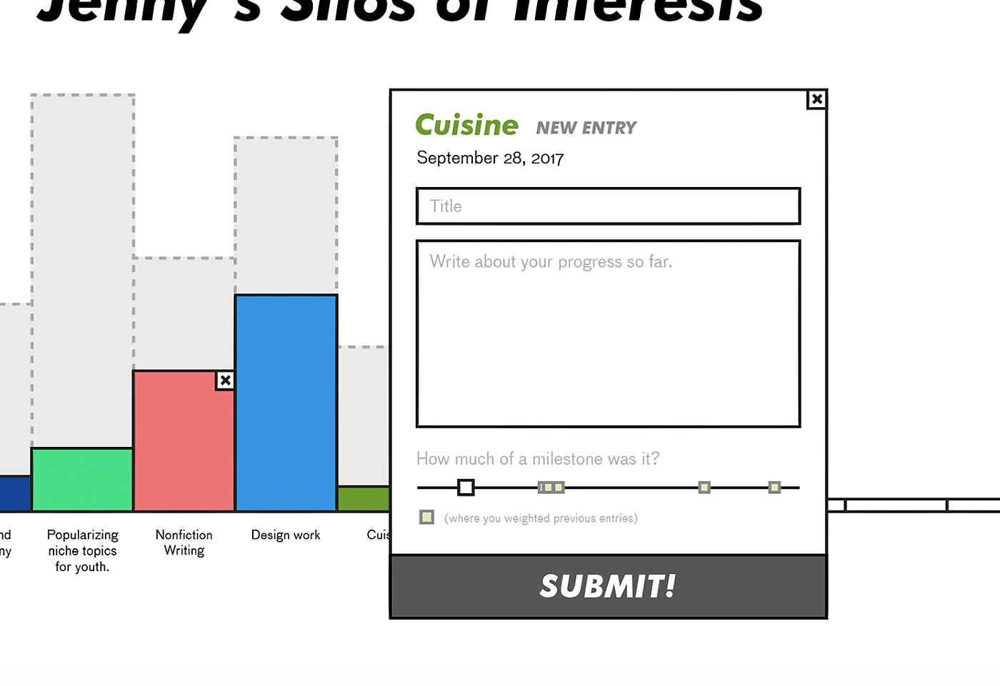

Last semester, I started a project, didn't flesh it out enough, and ended up doing a lot of research on how to build a technically better product.
This semester, I attempted to build a technically better product. Though I did make more progress, the development was not successful because the information hierarchy became convoluted. I did not attack the project right and was misguided in my approach. I should have put more time into the beginning wireframing.
I was discouraged by my progress. I decided to move on with my schedule, though, and interrupt my process with testing. I further fleshed out mockups (not wireframes) with click-through functionality, created a simple and imperatively coded JavaScript app, and sat with 5 people to qualitatively interview. This was the best decision during this rollercoaster of a project, and gave me much more clarity on my product hunches and my own role in digital product development.
Overall, I bit off more than I could chew. I struggled a lot and have a lot of self-doubt about my value as a designer. I wish I pursued a different kind of project that focused more explicitly on user research and market research—that was the part of this project that I enjoyed most.
The genesis of my content management platform was the desire to create a platform more robust than a static site generator, but less clunky than WordPress. The idea was to target the niche audience seeking to exercise some control over their website layout and content matter, but keep a fixed content structure. Some tools include too many moving parts, and the dashboards are overwhelming. I wanted to create a tool that reduced this complexity for the user. I visualized two functionalities:
As I began to plan out this product, I outlined what research, development work, and quality assurance measures would need to be determined. This first semester was dominantly research work, so for the purposes of this summary, I will just recap what my intentions were in this step of my process, and which ones I satisfied:
At the end of the Research stage, I planned to submit a paper to Professor Dent to explain my research on software infrastructure, why I chose my specific frameworks, and beta product specifications. However, after beginning this process, I realized my research did not necessarily fit this mold. Instead, my research and studies are quite circuitous and jump around in directions I didn't foresee.
After doing light research, I drafted a product spec for my CMS, which I over-eagerly created UI for and named:
Silogram is a CMS that allows you to create entries, much like how you would write in a journal, but for different categories of your life. Here's an example of what I picture you could do:
In this mockup, I created my own metrics and my own categories and goals. I imagine a user could click on a silo in their histogram and be prompted with a dialog to enter some notes on progress in that domain. For example, if I successfully prepared a really cool recipe, I could add an entry under Cuisine. That silo would increase based on the number of entries; perhaps entries could also have a field that includes weight, or how much of a milestone it is.
Thus, this project involves developing the following:
After some research and follow-up with a few developer friends, I decided I wanted to use the MERN stack (Mongo, Express, React, and Node) to create my application. I intended to borrow the structure from Webflow's CMS (largely based on "collections", which I believed my "entries" could be modeled off of), and TinyMCE's editing interface.
On October 1, I made headway on setting up the environment, which is now an abandoned testbed on my GitHub. I made the mistake of going into development too soon. I set up the React frontend and MongoDB backend, and started to create "Silo" components, until I hit a wall.
The Silogram specifications were very different from my original intentions. Though they did follow similar structures, Silogram pinholed the functionalities of the program, and it was difficult for me to come up with a program architecture that still satisfied my original goal. It was too specific.
Eventually, after more thorough research into different dashboard editors and my web design observations, I circled back to my original concept with of an entry-based, simple website creator and simplified the flow involved. The next two sections detail where I went this semester.
I wanted to research Webflow, WordPress, and Tumblr to pinpoint specific dashboard interface insights. These three platforms allow users to edit their front-facing website designs and are renowned for the robustness of these editor interfaces. Their interfaces will inform any dashboard I design.
Webflow is a website creator with WYSIWYG functionality but more detailed than a normal WYSIWYG editor because it reveals a second level that is often hidden from view. Because it allows editing of a second level of abstraction—specific positioning styles and media queries—the end product is behaviorally more sound. Websites made in Webflow actually perform like semantically correct websites.
I secondarily researched WordPress and Tumblr. These tools are content-based, much like how my original plan relied on entries. Webflow has a friendlier interface for theme/website design creation, so on WordPress and Tumblr, I mainly examine how content can be edited on these tools, not design.
For two of my personal web design projects, I decided to use the Webflow framework instead of designing and developing manually. As I learned to design with Webflow, I compared it with how I design from scratch, or if I were to use WordPress or Tumblr to manage content. I noted three key features that I felt crafted the seamless user experience on the editor side across these three platforms:
Considering the interfaces of these three programs helped me think about how I might organize the characteristics of an entry. Webflow excels at merging the language of manual web design with WYSIWYG functionality without being a directly drag-and-drop program.
This particular web design needed to be responsive, and I typically subscribe to mobile-first web development. Webflow has the option to develop for these different screen sizes easily, which is a unique function I find necessary: most of my CSS work, after I've determined the appearance characteristics, revolves around making elements work for different media queries.
Webflow allows for design within each of these media queries, but focuses on desktop-first. This caused me many problems as I went from editing the versions for larger screen sizes first to editing the smallest, mobile version. Any appearance changes made on the mobile version would not translate to the desktop version, but all appearance changes on desktop would apply to mobile. This made toggling between the settings while editing the appearances of objects highly inconsistent.
The tiered screen size editor is terrific. However, I would make it mobile-first, and make the first interface the smallest, mobile screen. This way, the editor must decide the most important components, basics of their appearance, and their hierarchy before worrying about the complexities that come with increased screen size.
Webflow allows editing of objects through these three abstractions. In the Styles panel, you can edit the appearance of the object, which includes superficial qualities like:
Below is the appearance editor on Tumblr. Tumblr themes control dominantly the visual frontend of the website, but the code of many themes allow for customization of superficial qualities.
While Tumblr only allows for this style editing (of color, font, background, etc.), Webflow also allows the editor to control other settings. In Webflow, the Settings panel allows for anchoring, visibility on different screen sizes, and linking. Basically, this panel controls the purpose of the object on the page.
The Interactions panel controls the behavior of the element on hover, when scrolled past, and on click or tap. The abilities included animation, and changing appearance qualities like opacity.
Webflow appropriately divides the attributes and functions of an element. These panels run the gamut of what can be edited in CSS for a given web object. My entry objects will be editable in similar form: appearance, object settings, and interactions.
In this example of Webflow "Collections", I've created a "Podcast" collection object, with fields that I determined like title, description, and SoundCloud link.
The "Collections" feature on Webflow is the nearest function I have found to how I imagine my entries object to be organized. Collections is very similar to how WordPress or Tumblr might store and edit "posts." However, it is lacking because I can only input a collection item through this interface, which is overwhelming to access if you are just a content editor.
Once I populate my collection fields with the content I want, I can control which elements display these fields. It's a great system to make the collection design on the frontend match your content seamlessly.
Both WordPress and Tumblr platforms organize their posts (the equivalent of a Webflow collection item) on the backend, separate visually from frontend. It's seamless, but more disconnected than Webflow because it's not immediately clear where the content fields display on the frontend. Below is the editor interface for WordPress, and how it translates to the frontend.
This frontend is structured through a WordPress theme where all of the content fields are translated into these variables through code. Therefore, WordPress is not as seamless of an interface. Tumblr similarly displays posts through a Tumblr theme.
These platforms clearly translate a collection item's/post's content fields into a frontend interface, but the editing of these fields are not straightfoward. In Webflow, you have to go into the Collections drop down on the admin editor; in WordPress and Tumblr, you need to access your feed dashboard and create a new post in a different interface.
A collection item should consist of fields that you can choose to populate your website design with. Populating these fields should be much easier than how Webflow, WordPress, or Tumblr allow content editing. This could be directly on the website design in a WYSIWYG fashion.
I actively look at websites on my favorite websites, One Page Love and Typewolf. I study the sites on these blogs in particular because they typically showcase lightweight, simple websites. By simple, I mean that the website has only one or two types of content to communicate—one kind of collection, such as static information about a restaurant, or a series of podcasts.
The designs are communicative of a single purpose, typically, and have a few very basic elements because they're so simple. These websites are often thesis statement websites, boiled down to their most necessary elements, rid of any sidebar, content, and widget fluff.
Based on my large exposure to website design and specifically these more simple, less content-heavy websites, I realized that most of the websites followed a natural grain. They all adhered to a few key qualities and components:
These patterns replicated across different website genres and aesthetics. I reflected that because many websites exist to communicate basic information about an entity, they must—at very least—include a header and content. These items are usually wrapped in a shared space via a container, and placed on a page with a background. There is often a navigation menu that allows you to toggle between the other content on the website, and there's a footer for ancillary information. These qualities are present in the following:
The look of the content varies between these sites: some display paragraphs, some display, some display paragraphs with graphic elements and photos, and some display graphic elements only. The header (section with the name/title of the website) is typically always grouped with the navigation, however, and both are found at the top of the page.
Most elements on these websites are contained within a wrapper of some sort to limit the width of the inner content. Dynamic content, or collection items, are contained within these wrappers.
Footers are always at the bottom and contain static content.
I realized that these designs represented one or two collection item structures at most. All of these websites have the same repeating structures, so they could easily be templates. Webflow, WordPress, and Tumblr's dashboard editors were overkill for such websites. Although the content is dynamic, going into a complex backend interface to populate/update exposes too many unnecessary web design nuances. These websites were all use cases for a templated, easy-to-use editing tool that didn't exist yet.
...the frontend could be easily populated in an "edit mode"? How can you create simple website with one or two collection items at most in a templated platform?
Through my research and studies, I began to identify the key components of an effective editor interface, and a simple website with a collection item. These apply across all website genres and aesthetic styles.
To describe this tool, I will describe a larger concept of modular design to create interfaces.
Modules are standardized, independent objects that can be used to make up a more complex object. Interfaces are an example of an object that modules can make up.
Built in jQuery, this is a website tool to allow users to design and style a fixed set of modules for a given interface.
For a v0 example, users can apply this tool to build websites. As I detailed, many "simple websites" share some bare minimum elements, like a header and navigation menu. A header is a module. A navigation menu is also a module.
This tool will present to users a website template that contains plain versions of these modules. It will allow them to drag-and-drop and stylize the modules for mobile, mid-sized, and large screens. After the user is done designing their modules how they want, they can export the what they've made as a static website with a Sass stylesheet.
In the future, this tool will allow designs to be open-source. When someone creates a website design, it can be saved to a database and available for anyone to use. This is similar to how Thingiverse or Tumblr themes can be shared.
I began developing the application this semester within the same repository as the previous content. This is what the basic text-editor in React looks like:
With the help of my developer friends Andrew and Luke, they were able to walk me through some of the loftier concepts of my program. I don't have visual representations, of each of these things because I couldn't implement the editor interface. Below is the overall structure of my React app components:
The content container holds all the objects on a page. Slides are the biggest objects the content container can have, and slides contain box and context menus. Boxes are elements like text and images, and they have their own box editors. I had yet to create the slide manager and object editor containers because they would contain elements from the content container.
I ran into issues with hierarchy. This halted my development. Passing back and forth information from the box objects to the slide was confusing to me. I got lost in all of the different ways the objects would interact—I wasn't even sure myself.
I wasn't sure whether to make the box editor belong to the box or belong to the slide. If the editor belonged to the box, which makes the most sense, the parent slide or object editor container would not be able to access it. If the editor belonged to the slide, the slide would need to actively keep track of every objects' properties.
This was as far as I got with the implementation of the React app. My callback functions were erroneous because I didn't think about the scope of each box object, and what attributes should be editable. I tackled the coding before the blueprint was really determined, and though I reached a certain point where this was fine, it ultimately stopped my entire development because I didn't know how to use React for more complex object relationships.
You can look at the repository for the unfinished React frontend here.
I decided to focus on a hard-coded version because manipulating the front-end with my own JavaScript and helper functions made more sense to me than developing components within a hierarchy. Especially for a lo-fi prototype, I just needed elements to behave as they should.
Below is the hard-coded prototype. Double-click activates the context menu.
You can look at this in its own window here.
For the testing of this project, I chose 5 people I thought fit the prospective market for this tool: young adults who are technically skilled but not quite advanced. I first asked them what their experiences were with making websites. All testers:
After these preliminary questions, I walked through the screenshots of my mockups together with each tester to understand their natural user flow. At each stage, I asked the following questions:
I circled the click-through action items for each slide in yellow. For each prompt, I observed the users locate and find these prompts in the UI.
The mockups opened with an intro modal, and a blank interface. I prompted them to start a website by creating a new slide.
This was a pretty straightforward task. Everyone clicked on the New Slide button, because on the blank interface it directed them to do so.
I did get feedback that the concept of slides was confusing, though, which goes against my hypothesis that it would be easier to understand. This specific feedback surfaced a few questions from testers:
Though I envisioned the application to be a single-page scrolling website, with slides as stacked vertical blocks, testing made me realize that "slides" is a misleading word. Even for an MVP, the functionality I prototyped may not actually make sense to many users.
This step in the prototype let me observe how users interacted with the other editor modules on the screen: the controller at the top, and the Objects Editor on the right. I got insights about their expectations and how these modules might be changed.
The controller at the top of the screen made sense to my users, but I did get feedback to make it more icon-based or toolbar-like, and perhaps to move "Export Website" into its own section as a standalone button.
Something interesting one of my testers said something insightful about exporting:
"[The Export button] could go in the bottom right corner, or top right corner, because it makes sense for the next step to move you from left to right... In video games, 'next' prompts are usually on the right."
In my front-end coded prototype, I hid all of these controller items in a double-click context menu, but this proved inaccessible. For testing, I decided to put controller items in te controller panel.
However, having this controller also seemed to clutter the workspace. Another tester didn't understand what the functional difference between the controller and the slide editor was, and believed they could be combined or reorganized.
This prototype tested how users edited slide objects and text objects. For slides, editing attributes made sense in this distinct module. For text, however, it was a little more confusing.
This was my initial idea: an interface where the object editor was connected to each object, and any and all attributes can be edited in this module.
Because I was unsure how to develop this, I decided to avoid it for the prototype. Luke also advised against this interface because the editor would not be fixed to the screen, so for large objects that could potentially span larger than one fold of a screen, the placement of the editor would be a challenge. So, I divided object editing options this way:
For editing text, my prototype split up the Object Editor from the text editor attributes, notwithstanding the text alignment, which I put in the Object Editor. Though it was straightforward, the testers were almost unanimously confused by the contents of the Object Editor. Upon examination, it made sense that the position-based attributes (the characteristics of the textbox that weren't related to the look of the actual text) were in their own dialog. However, these functions weren't immediately obvious—especially the positioning function.
This is when the slides-based capability became more obvious to most testers. They could visually see that the page would scroll, and the slides would be stacked. I asked them make a new slide, add an image to it, and tell me how they would make the image fill the slide.
Everyone preferred to drag the corners of the image to fill the screen. They expected a "snap-to-grid" behavior. No one understood the Object Editor width function. This validated my hypothesis that drag and drop is necessary, and why tools like WordPress and Webflow that do not allow positioning and resizing happen via drag and drop have such huge learning curves.
After playing around with the prototypes, I asked each tester what they enjoyed, what they didn't, and what they would change about the process. Here are the most actionable steps:
Alternatively, these are steps I'd want to take to rework the entire application completely:
Overall, I did not meet my goal with my development progress. I realized that it was difficult for me to determine the information architecture. Diagnosing all the different use cases for every single object was not clear.
My directed research project can technically be examined through the lens of human-centered design:
But really, this is what the whole process felt like through my own lens of hindsight:
In deep reflection, I made a lot of mistakes from this process. This was my first time attempting to build something like this, and I ignored the warnings I kept receiving about overwhelming this idea could be, especially because I didn't have the time or preparation to take on something of this scope.
I've been thinking a lot about what my skill set is. The Academy has let me explore deeply my skills and my natural aptitude at them. I think I like front-end development and UI development for the same reason I like to write: I enjoy designing a story. In writing, the medium is words. In digital products, the mediums are interfaces and visual interactions. When it came to attempting the development, I thought too heavily on trying to map things out visually, or understand specific interactions, while I was developing. I complicated my entire process because I hedged on certain design decisions. I did not mesh design and development in an organized way.
My biggest regrets for this project was starting so stubbornly in a direction where I had very spotty amateur understanding. I thought I could do it, but my ego was tricked by my skills. I spent too much time on this project doing little things in the code and changing my product. Many results of this time spent didn't even make it into the prototypes or deliverables. I should have focused most heavily on the design and research, where I'm more well-versed, and less on development.
Development requires design because design is the instruction. Developing is just finding the right tools to accomplish the directions. I was so transfixed by a certain tool and its architecture that I failed to create a comprehensive design to follow.
I am glad I tested what I was working on. I'm glad I interrupted my development because I realized just how much time I had wasted on functions that would not contribute to a prototype. At this point, I wished I better fleshed out a prototype (mapped it out visually) so I could break down the product into something much smaller to attempt. Especially in a new language and type of thinking, React was not an intuitive experience for me to try something so big in.
The testing recalibrated my entire idea that made me decide to embark on this convoluted adventure in the first place. I learned so many flaws in what I was thinking, and holes in my thinking altogether. It also got me to think much more large scale. Going into my Garage Experience, this was an experiment in how I should deal with projects and hunches. I've learned that because of my stubborn tendencies to brute force my way into projects and ideas, I need to focus on clarity.
Overall, this whole year has been a strange, multi-disciplinary experience for me. I balanced D&M with an English minor and a more academic research project. It's the first time I've attempted to get things done on my own, and I've learned a lot about my habits. My design and development habits aren't perfect, and because tech is evolving so quickly, there were so many frameworks of thought I didn't understand when it came to development.
Also, in all honesty, because I didn't understand these topics intuitively, I tended to focus on other parts of this process, other work, and other subjects in my life with more passion because I did understand them intuitively. I enjoyed the conversations with testers and recording their insights with my own. I learned a whole lot about people's tendencies with interfaces, and different, specific preferences they had. Everyone interprets websites differently from me based on the things they've seen before.
I had a hunch that made sense and I tested it, with mostly positive results. I still think there's a lot to think through regarding the admin side of website design, but before I make anything, I should sit down and do more research on the processes website generation based on intent.
Based on this experience, I understand better my role in tech. This is an illustration of my strengths. Size of circle indicates aptitude.
While I have an understanding of development, I certainly do not easily work with the nuances of technical product development. I'm better suited at noticing insights—what kicked off this entire project in the first place—and fleshing them out on the people side of the design. I've noticed that my strengths lie in testing, talking to others, and being observant. I don't follow directions well in the coding context.
Moving forward, I think it's going to be a while before I attempt to code something like this again. I have to really flesh out an insight I want to develop for first, and design for the insight in a very specific way. Alternatively, I should take my skills into a team and focus on doing the design and research.